Cultura general
476 recursos de Cultura general en español, sin preparación y con solucionario: fichas de lectura, búsquedas del tesoro y más, filtrables por grado.
476 recursos
Grado

«El taller de velas» – Búsqueda del tesoro de lectura

«El viaje de la papa en la granja» – Búsqueda del tesoro de lectura

«La temporada de calabazas en la granja» – Búsqueda del tesoro de lectura

Atlas – Ficha de lectura: texto con huecos, comprensión auditiva y sopa de letras

Apóstoles en el Nuevo Testamento – Ficha de lectura: texto con huecos, comprensión auditiva y sopa de letras

Antisemitismo – Ficha de lectura: texto con huecos, comprensión auditiva y sopa de letras

Andy Warhol – Ficha de lectura: texto con huecos, comprensión auditiva y sopa de letras

Amanita muscaria – Ficha de lectura: texto con huecos, comprensión auditiva y sopa de letras

Alá – Ficha de lectura: texto con huecos, comprensión auditiva y sopa de letras

Alquimia – Ficha de lectura: texto con huecos, comprensión auditiva y sopa de letras
Alias – Ficha de lectura: texto con huecos, comprensión auditiva y sopa de letras
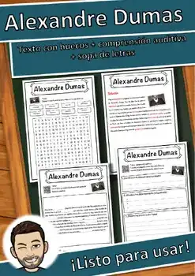
Alexandre Dumas – Ficha de lectura: texto con huecos, comprensión auditiva y sopa de letras
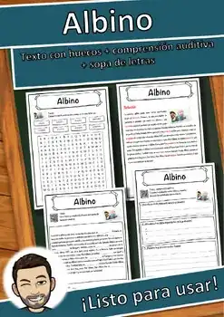
Albino – Ficha de lectura: texto con huecos, comprensión auditiva y sopa de letras
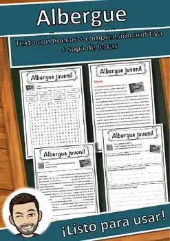
Albergue juvenil – Ficha de lectura: texto con huecos, comprensión auditiva y sopa de letras
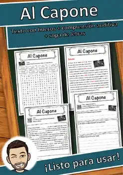
Al Capone – Ficha de lectura: texto con huecos, comprensión auditiva y sopa de letras
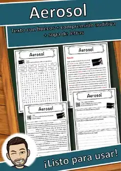
Aerosol – Ficha de lectura: texto con huecos, comprensión auditiva y sopa de letras
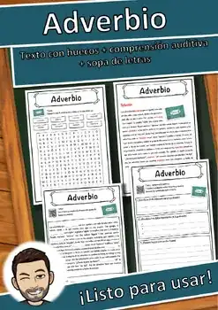
Adverbio – Ficha de lectura: texto con huecos, comprensión auditiva y sopa de letras
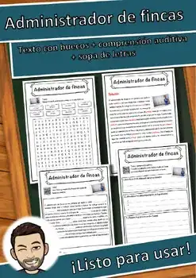
Administrador de fincas – Ficha de lectura: texto con huecos, comprensión auditiva y sopa de letras
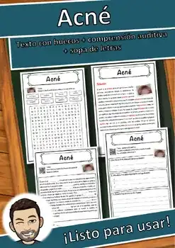
Acné – Ficha de lectura: texto con huecos, comprensión auditiva y sopa de letras
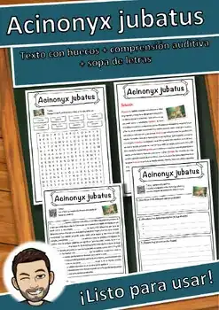
Acinonyx jubatus – Ficha de lectura: texto con huecos, comprensión auditiva y sopa de letras
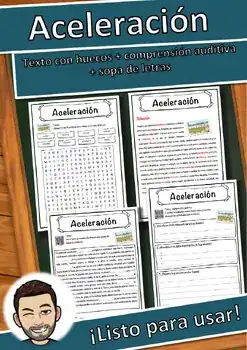
Aceleración – Ficha de lectura: texto con huecos, comprensión auditiva y sopa de letras
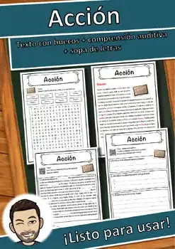
Acción – Ficha de lectura: texto con huecos, comprensión auditiva y sopa de letras
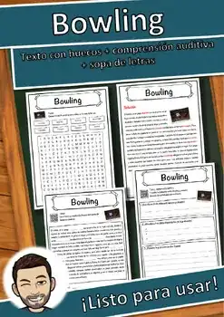
Bowling – Ficha de lectura: texto con huecos, comprensión auditiva y sopa de letras
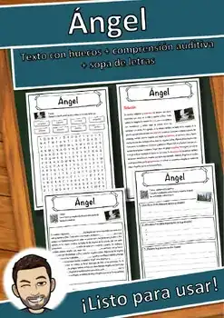
Ángel – Ficha de lectura: texto con huecos, comprensión auditiva y sopa de letras
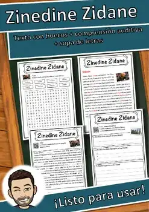
Zinedine Zidane – Ficha de lectura: texto con huecos, comprensión auditiva y sopa de letras
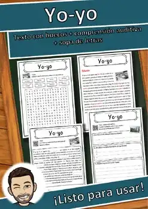
Yo-yo – Ficha de lectura: texto con huecos, comprensión auditiva y sopa de letras
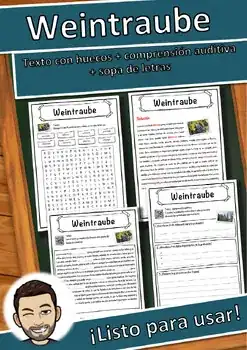
Uva – Ficha de lectura: texto con huecos, comprensión auditiva y sopa de letras

Violencia – Ficha de lectura: texto con huecos, comprensión auditiva y sopa de letras
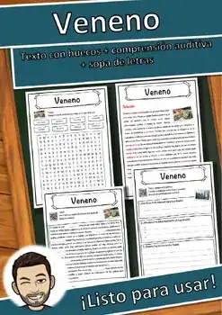
Veneno – Ficha de lectura: texto con huecos, comprensión auditiva y sopa de letras
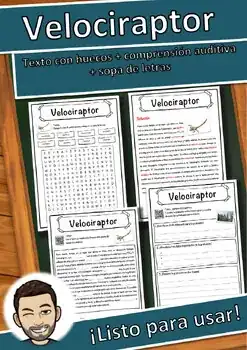
Velociraptor – Ficha de lectura: texto con huecos, comprensión auditiva y sopa de letras
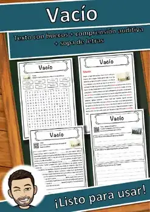
Vacío – Ficha de lectura: texto con huecos, comprensión auditiva y sopa de letras
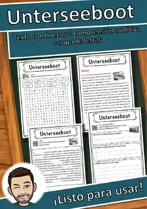
Submarino – Ficha de lectura: texto con huecos, comprensión auditiva y sopa de letras
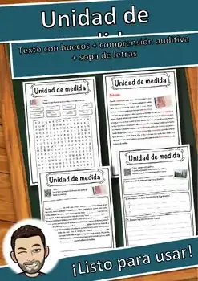
Unidad de medida – Ficha de lectura: texto con huecos, comprensión auditiva y sopa de letras
Triceratops – Ficha de lectura: texto con huecos, comprensión auditiva y sopa de letras
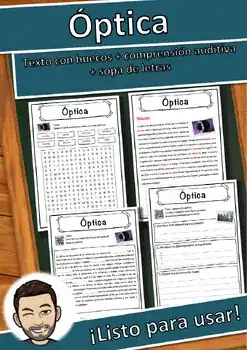
Óptica – Ficha de lectura: texto con huecos, comprensión auditiva y sopa de letras
Trastorno mental – Ficha de lectura: texto con huecos, comprensión auditiva y sopa de letras
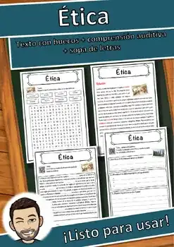
Ética – Ficha de lectura: texto con huecos, comprensión auditiva y sopa de letras
Transgénero – Ficha de lectura: texto con huecos, comprensión auditiva y sopa de letras
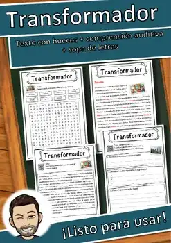
Transformador – Ficha de lectura: texto con huecos, comprensión auditiva y sopa de letras
Trabajador de cuello blanco – Ficha de lectura: texto con huecos, comprensión auditiva y sopa de letras
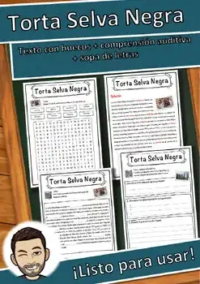
Torta Selva Negra – Ficha de lectura: texto con huecos, comprensión auditiva y sopa de letras
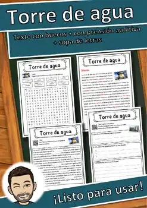
Torre de agua – Ficha de lectura: texto con huecos, comprensión auditiva y sopa de letras
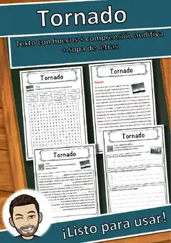
Tornado – Ficha de lectura: texto con huecos, comprensión auditiva y sopa de letras
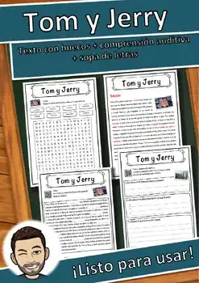
Tom y Jerry – Ficha de lectura: texto con huecos, comprensión auditiva y sopa de letras
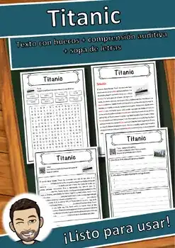
Titanic – Ficha de lectura: texto con huecos, comprensión auditiva y sopa de letras
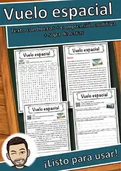
Vuelo espacial – Ficha de lectura: texto con huecos, comprensión auditiva y sopa de letras
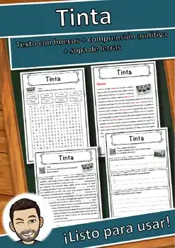
Tinta – Ficha de lectura: texto con huecos, comprensión auditiva y sopa de letras
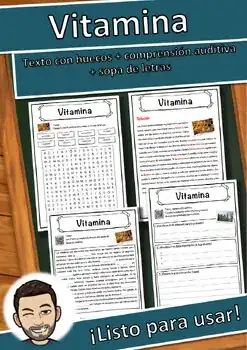
Vitamina – Ficha de lectura: texto con huecos, comprensión auditiva y sopa de letras
No se encontraron recursos. Prueba con otra palabra o con otro filtro.